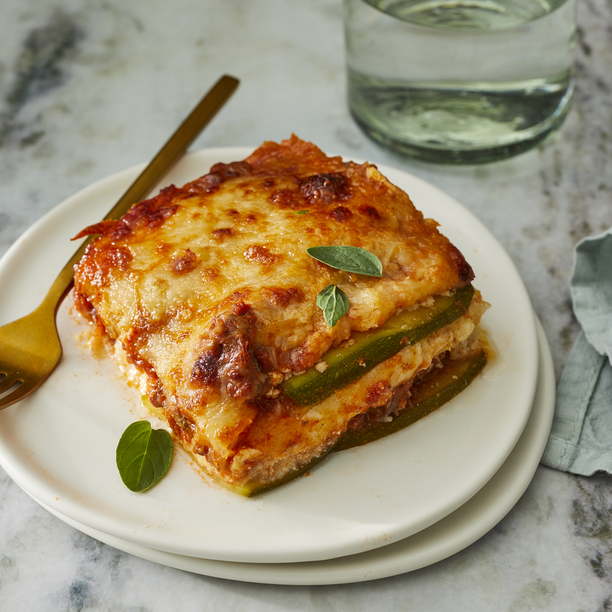

Lasagana

Description
Lasagna is the name of one of the oldest and best-known pasta shapes. It is usually rectangular or ribbon shaped, thicker than tagliatelle, made from a dough based on flour and eggs, with numerous local variants. After being boiled, the rectangular lasagna noodles are drained and placed in layers with a filling that varies based on different local traditions.
Ingredients
- cooking spray
- 1½ large zucchinis, thinly sliced lengthwise
- 1 tablespoon olive oil
- 1 pound ground beef
- 1½ cups low-carb marinara sauce
- 2 teaspoons salt, divided
- 1 teaspoon dried oregano
- ½ teaspoon ground black pepper
- 1 (8 ounce) container ricotta cheese
- 1 large egg
- ½ teaspoon ground nutmeg
- 2 cups shredded mozzarella cheese
- ¼ cup grated Parmesan cheese
- aluminum foil